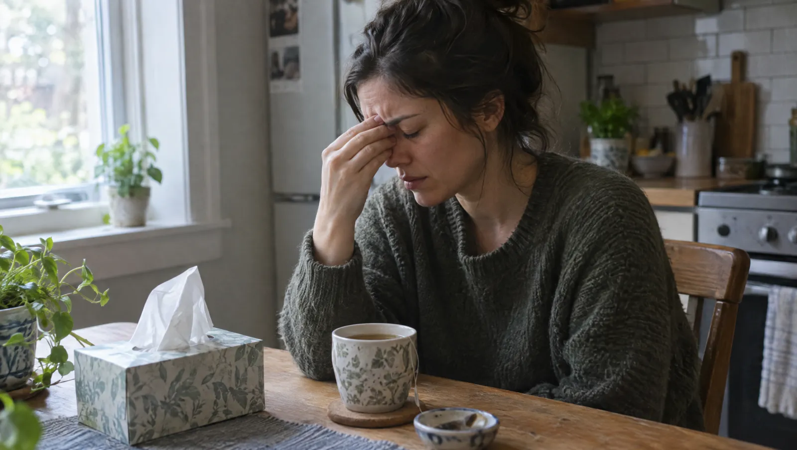

Kısaca
- Sinüzitlerin çoğu virüs kaynaklıdır ve 7-10 günde hafifler
- On günü aşan ya da düzelip yeniden kötüleşen şikâyet muayene gerektirir
- Şikâyetler on iki haftayı geçtiyse sinüzit kronikleşmiş demektir
- KBB uzmanı tanıda burun endoskopisine, gerekirse sinüs tomografisine başvurur
- Göz çevresinde şişlik ya da görme değişikliği acil durumdur
Sinüzitin süresi neyi anlatır?
Sinüsler, burnun çevresindeki yüz kemiklerinde yer alan hava dolu boşluklardır. Soğuk algınlığı sırasında içleri şişer ve akıntı birikir. Bu tablo çoğunlukla virüslere bağlıdır, bu yüzden 7-10 gün içinde kendiliğinden hafifler. Hekimler dört haftadan kısa süren tabloya akut, on iki haftayı aşana ise kronik sinüzit der.
Arada kalan dönem çoğu zaman iyileşmesi geciken bir akut sinüzittir. Süre önemlidir, çünkü tedavi yaklaşımı ve gereken tetkikler buna göre değişir. Örneğin üç günlük bir yüz ağrısı için tomografi gerekmez. On iki haftadır kesintisiz süren tıkanıklıkta ise sinüslerin içine ayrıntılı bakmak gerekebilir.
Hangi durumda KBB'ye görünmelisiniz?
Soğuk algınlığı belirtileri on günü geçtiği halde düzelmiyorsa bir KBB muayenesi planlayın. Birkaç gün iyileşip sonra ateşle yeniden kötüleşmek de önemli bir işarettir. Çünkü bu iki tablo, enfeksiyona bakterilerin de karıştığını düşündürebilir. Yılda dört ya da daha fazla sinüzit atağı geçirmek de ayrıntılı değerlendirme gerektirir.
- On günü aşan burun akıntısı ve tıkanıklık
- Soğuk algınlığı geçtikten sonra da süren yüz ve diş baskısı
- Koku almanın azalması ya da kaybolması
- Boğaza akan koyu akıntı ve buna bağlı gece öksürüğü
- Hep aynı taraftan gelen kanlı ya da kötü kokulu akıntı
Göz çevresinde kızarıklık ve şişlik, çift ya da bulanık görme tehlike işaretidir. Şiddetli baş ağrısı, ense sertliği ve bilinç bulanıklığı da aynı gruptadır. Çünkü bu durumlarda enfeksiyon sinüslerin dışına taşmış olabilir. Hiç beklemeden 112'yi arayın veya bir acil servise gidin.
Akut ve kronik sinüzit arasındaki fark nedir?
İki tablo da burun tıkanıklığı ve akıntıyla seyreder, ama süreleri ve öne çıkan şikâyetleri farklıdır. Örneğin akut sinüzit genellikle ateş ve belirgin yüz ağrısıyla gelir. Kronik sinüzitte ise ağrı silikleşir; tıkanıklık, koku kaybı ve geniz akıntısı aylarca sürer. Aşağıdaki tablo bu farkları özetler.
| Özellik | Akut sinüzit | Kronik sinüzit |
|---|---|---|
| Süre | 4 haftadan kısa | 12 haftadan uzun |
| Ateş | Sık | Nadir |
| Yüz ağrısı | Belirgin | Hafif ya da yok |
| Koku kaybı | Geçici | Uzun süreli |
| Sık zemin | Soğuk algınlığı | Alerji, burun eğriliği, polip |
Kronik sinüzitin arkasında çoğu zaman bir mikroptan çok, sinüslerin havalanmasını bozan bir zemin vardır. Burun eğriliği, alerjik nezle ve burun polipleri bu zeminin sık örnekleridir. Sigara dumanı da bu zemini besleyen etkenlerden biridir. Bu yüzden tedavi yalnızca enfeksiyonu değil, havalanmayı engelleyen nedeni de hedef alır.
KBB muayenesi adım adım
Muayenenin amacı, sinüs ağızlarının neden tıkandığını görmek ve atakların kaynağını bulmaktır. Bu yüzden hekim yalnızca o günkü şikâyete değil, son bir yılın öyküsüne de bakar. Muayenenin büyük bölümü birkaç dakika sürer ve ağrı vermez. Ameliyat gerekip gerekmediği ise çoğu zaman ancak tedavi denendikten sonra netleşir.
- Önce hekim şikâyetlerin süresini, atak sayısını ve kullandığınız spreyleri sorar.
- Sonra burun içine ve boğaza ışıklı bir aletle bakar.
- Gerekirse burnunuzu uyuşturan bir sprey sıkar ve ince bir kamerayla endoskopi yapar.
- Kronik tabloda ya da tedaviye yanıt alınamayan şikâyette sinüs tomografisi ister.
- Son olarak bulgulara göre tedavi planını ve kontrol tarihini sizinle konuşur.
- Sinüs ağzı
- Sinüsleri burun boşluğuna bağlayan dar açıklık. Şiştiğinde akıntı içeride kalır.
- Geniz akıntısı
- Burundan boğaza doğru süzülen akıntı. Özellikle gece öksürüğe yol açabilir.
- Burun polibi
- Burun ve sinüs zarından kaynaklanan iyi huylu, yumuşak çıkıntı. Tıkanıklığı ve koku kaybını artırır.
- Burun endoskopisi
- İnce bir kamerayla burun içinin ve sinüs ağızlarının ekranda incelenmesi.
Evde neler işe yarar, neler yaramaz?
Akut sinüzitin ilk günlerinde bol sıvı almak, dinlenmek ve buharlı bir ortamda bulunmak rahatlatır. Tuzlu suyla burun yıkama da akıntının atılmasına yardım eder. Bu yöntemleri hekiminize danışarak uygulayın. Öte yandan reçetesiz ya da evde kalmış bir antibiyotik işe yaramaz. Çünkü sinüzitlerin çoğu virüs kaynaklıdır ve ilaç ishal gibi yan etkiler getirebilir.
- Burun açıcı spreyi birkaç günden uzun kullanmayın
- Önceki hastalıktan kalan antibiyotiği içmeyin
- Sigara dumanının olduğu ortamlardan uzak durun
- Burnunuzu iki taraftan birden ve sertçe sümkürmeyin
Sinüzit ameliyatı ne zaman gündeme gelir?
Kronik sinüzitlerin çoğu ilaç tedavisi ve burun bakımıyla kontrol altına girer. Düzenli tedaviye rağmen şikâyetler sürüyorsa ya da polipler burnu tıkıyorsa hekiminiz ameliyatı gündeme getirir. Cerrah bu ameliyatı çoğunlukla burun içinden, kamera yardımıyla yapar; yüzde kesi gerekmez. Böylece sinüs ağızları genişler ve havalanma düzelir.
Ameliyattan sonra iyileşme genellikle birkaç hafta sürer. Bu dönemde burun tıkanıklığı ve hafif kanlı akıntı beklenen şikâyetlerdir. Hekiminiz burun yıkamayı ve kontrol tarihlerini sizinle planlar. Ameliyat polipleri ve tıkanıklığı giderir ama alerji gibi zemini ortadan kaldırmaz. Bu yüzden tedaviyi sonra da sürdürmek gerekir.
Antibiyotik, diş ağrısı ve bulaş
Sinüzit antibiyotiksiz geçer mi?
Çoğu zaman geçer. Sinüzitlerin büyük kısmının arkasında virüsler vardır; antibiyotik ise yalnızca bakterilere etkilidir. Hekiminiz bakteriyel enfeksiyon düşündüren bir tablo görürse tedaviyi buna göre seçer. Örneğin on günü aşan ya da düzeldikten sonra kötüleşen şikâyet bu ayrımda yol gösterir.
Sinüzit diş ağrısı yapar mı?
Yapabilir. Üst çene dişlerinin kökleri yanak sinüslerine çok yakındır. Bu yüzden sinüzit üst dişlerde sızı gibi hissedilebilir. Tersi de mümkündür: Üst çenedeki bir diş enfeksiyonu sinüse yayılabilir. Bir taraftaki inatçı yanak ağrısında hem KBB hem diş muayenesi gerekebilir.
Sinüzit bulaşıcı mıdır?
Sinüzitin kendisi bulaşmaz. Ancak onu başlatan soğuk algınlığı virüsleri öksürük, hapşırık ve eller yoluyla kolayca yayılır. El yıkamak ve havlu paylaşmamak bu riski azaltır. Hapşırırken ağzınızı ve burnunuzu kapatmayı da unutmayın.
Kronik sinüzit ve ameliyat hakkında
Kronik sinüzit kalıcı olarak geçer mi?
Pek çok hastada şikâyetler düzenli tedaviyle belirgin biçimde azalır. Zemindeki neden, örneğin alerji ya da polip, kontrol altına alınmadıkça ataklar tekrarlayabilir. Bu yüzden kronik sinüzitte hedef çoğu zaman uzun süreli kontrol ve atakların seyrekleşmesidir. Ameliyattan sonra da burun bakımını sürdürmek ve kontrollere gelmek önemlidir. Sigara içiyorsanız bırakmak, tedavinin başarısını doğrudan etkileyen adımlardan biridir. Alerjiniz varsa tetikleyicilerden uzak durmak da atak sayısını azaltır. Kontrollerde hekiminiz burun içini endoskopla izleyerek polip ya da şişliğin geri gelip gelmediğine bakar.
Uçak yolculuğu sinüs ağrısını artırır mı?
Artırabilir. İniş ve kalkıştaki basınç değişimi, ağzı tıkalı sinüslerde şiddetli ağrıya yol açabilir. Aktif bir atak sırasında yolculuk planınız varsa önceden hekiminize danışın. Ateşiniz ve şiddetli yüz ağrınız varsa yolculuğu ertelemek daha doğru olabilir.
Çocuklarda da kronik sinüzit olur mu?
Olur ama yetişkinlerden daha seyrektir. Çocuklarda uzun süren akıntı ve gece öksürüğünün sık nedenlerinden biri büyük geniz etidir. Bu yüzden hekim çocuğunuzun muayenesinde geniz etini de değerlendirir. Geniz eti ve sinüs sorunlarını çoğu zaman birlikte ele alırız.
Kaynaklar
Bu yazıyı Op. Dr. Hande Çakır gözden geçirdi. Yayın tarihi: 26 Eylül 2026. Yazı genel bilgilendirme içindir, muayenenin yerini tutmaz.